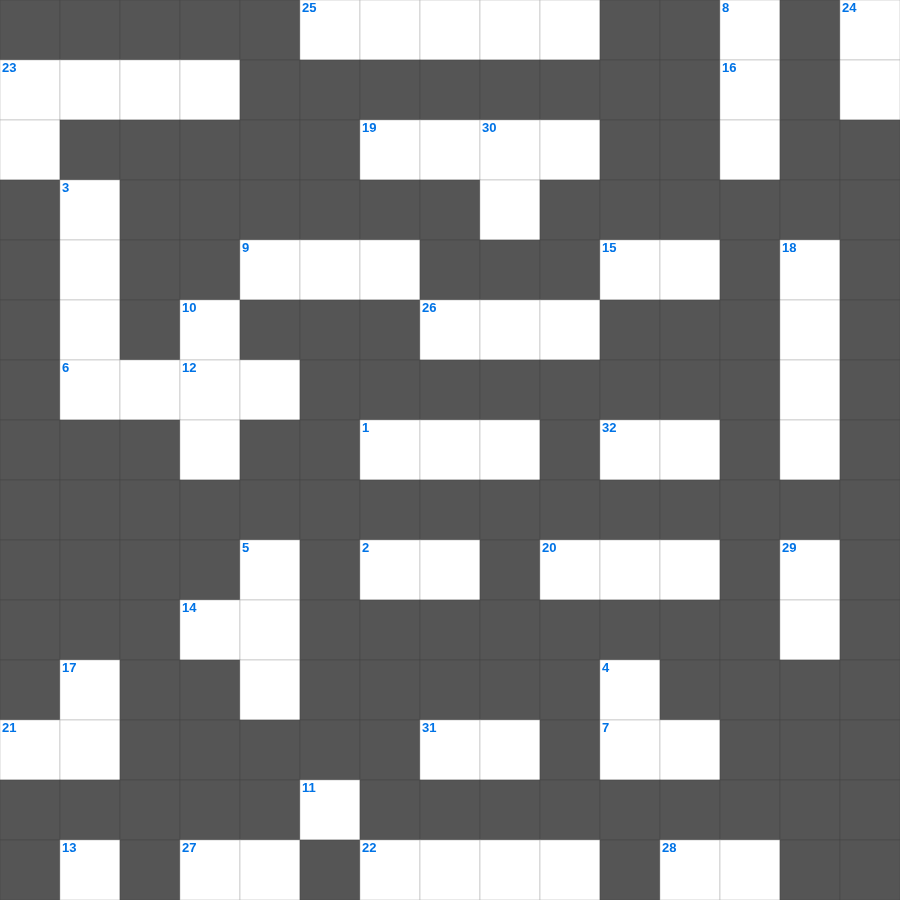

예수님의 생애: 탄생과 유년기
📌 서비스 정의
십자가로세로는 교회 주보와 주일학교에서 사용할 수 있는 성경 기반 가로세로 퍼즐 서비스입니다. 성경 인물, 사건, 핵심 구절을 바탕으로 제작되었습니다. 온라인 풀이 및 인쇄 기능을 제공합니다.
📖 이 글은 어떤 내용인가요?
예수님의 탄생은 천사 가브리엘의 수태고지로부터 시작되어, 베들레헴 마구간에서 태어나심으로 이어집니다. 목자들의 경배, 동방박사들의 방문, 이집트로의 피난, 그리고 나사렛에서의 유년기는 예수님의 시작을 보여주는 중요한 장면들입니다. 이 퍼즐은 예수님의 탄생과 유년기 이야기를 살펴봅니다.
📚 핵심 포인트
수태고지 · 베들레헴 마구간의 탄생 · 목자들의 경배 · 동방박사의 방문 · 이집트 피난과 나사렛 생활
예수님의 생애를 주제로 한 예수님의 생애 성경공부 자료입니다. 35개의 단어를 맞춰보세요! 가로세로 낱말 퍼즐 형식으로 예수님의 생애의 핵심 내용을 재미있게 복습할 수 있습니다.

📝 가로 힌트
1. 하나님의 보좌 앞 일곱 등불
2. 고라 자손의 반역 때 땅이 갈라짐
6. 보라 세상 죄를 지고 가는 하나님의 이것
7. 발람 선지자를 책망하며 말을 한 동물
7. 예수님이 예루살렘 입성 때 타신 것
9. 사도 요한이 계시록을 기록한 섬
12. 오래 참음, 자비, 이것
13. 베드로가 세 번 부인할 때 울었던 새
14. 보냄을 받은 자라는 뜻
15. 베드로가 감옥에서 천사의 도움으로 나옴
16. 모세가 반석을 치자 나온 것
19. 예수님을 은 30에 판 제자
20. 이스라엘의 유일한 여성 사사
21. 보이지 않는 것들의 실상이요 바라는 것들의 증거
22. 교회는 그리스도의 몸
23. 살아계신 하나님의 아들
25. 엘리가 의자에서 넘어져 목이 부러져 죽은 이유
26. 예수님이 십자가에 못 박히신 곳
27. 잘못을 뉘우치고 하나님께 돌아오는 것
28. 장래에 이루어질 좋은 일을 기다리는 마음
📝 세로 힌트
3. 떡 다섯 개와 물고기 두 마리로 오천 명을 먹이심
4. 광야에서 하늘에서 내려온 양식
5. 가나 혼인잔치에서 물이 이것이 된 기적
8. 바다의 물고기와 이것들
10. 하나님께 노래로 영광 돌리는 팀
11. 가인이 아벨을 죽인 도구(전통적 해석)
16. 다윗이 골리앗을 쓰러뜨린 무기
17. 세례를 주는 물의 영적 의미
18. 인류 최초의 옷은 무슨 잎으로 만들었나?
23. 언약궤를 덮고 있는 두 천사 형상
24. 새 예루살렘 성곽의 첫 번째 기초석
29. 르호보암 왕 때 나라가 둘로 나뉨
30. 예수님을 판 제자
🧩 이 퍼즐에서 배우는 내용
이 퍼즐은 예수님의 생애: 탄생과 유년기의 핵심 단어와 개념을 자연스럽게 복습할 수 있도록 구성되었습니다. 주일학교 수업이나 개인 성경공부에서 학습 내용을 점검하는 용도로 바로 활용할 수 있습니다.
🧑🏫 교회 교육 자료 활용
이 퍼즐은 주일학교 교재 추천 자료로 활용할 수 있고, 주일학교 주보에 넣기 좋은 분량으로 구성되어 있습니다. 수업용 주일학교 교안에 활동지로 붙이거나, 예배 후 복습용 주일학교 공과교재로 바로 사용할 수 있습니다.
🏷️ 키워드
예수님의 생애 성경공부 자료, 예수님의 생애, 십자가로세로, 성경퀴즈, 말씀퀴즈, 가로세로퍼즐, 주일학교 교재 추천, 주일학교 주보, 주일학교 교안, 주일학교 공과교재